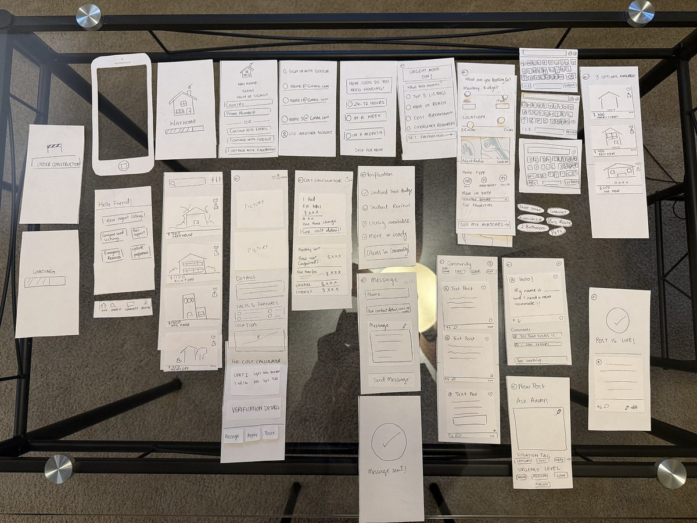
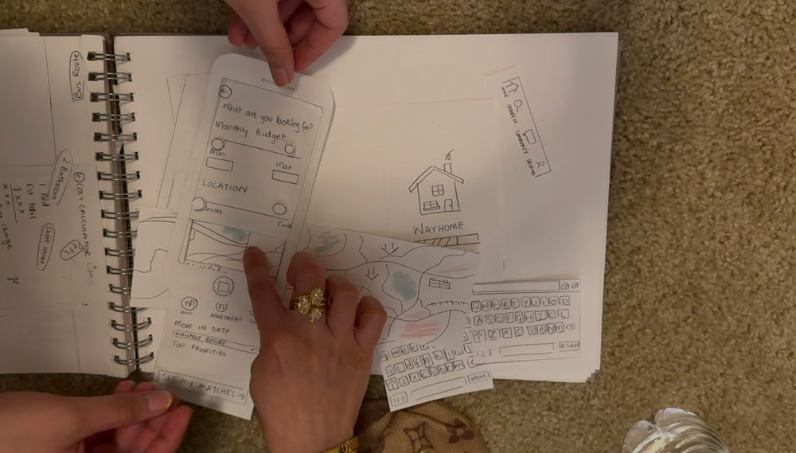
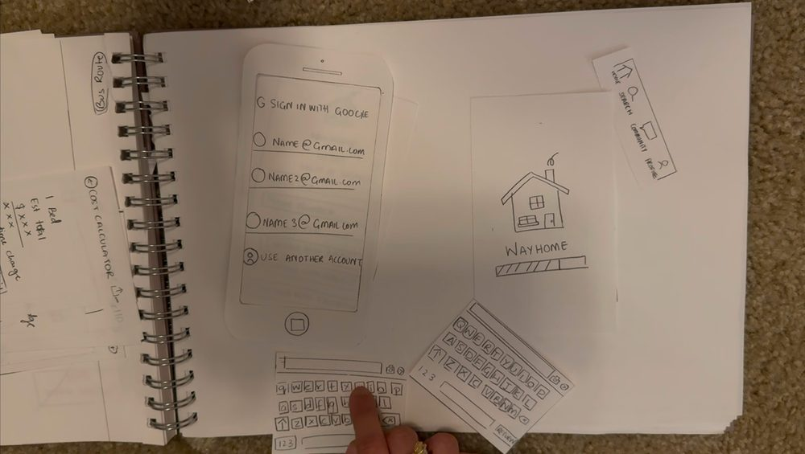
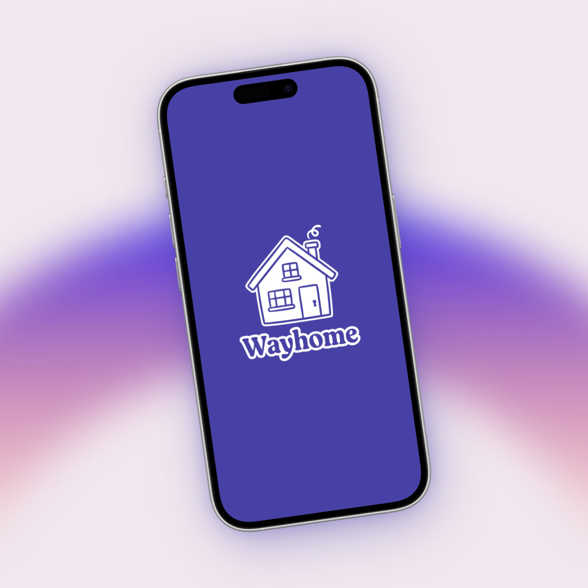
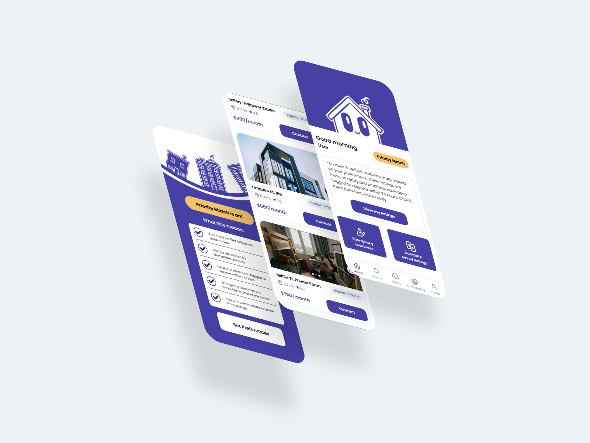

WayHome
Making student housing searches feel manageable, with a mobile app built around tight leasing deadlines and the scattered information general rental tools were never designed for.

The Problem
For UW–Madison students, a housing search doesn't happen on its own timeline. Leases open before the semester has even settled in, and only 27% of students found reliable housing information easy to access in the first place, leaving most students piecing together trust from strangers. The pressure isn't always predictable either: a roommate backs out, a lease falls through, and a search that had months to unfold suddenly has days, not weeks, left on the clock.
I surveyed and interviewed UW–Madison students directly to understand this problem more closely.
01) Research
Student Surveys, Pain Point Mapping, User Interviews, Competitive Analysis
02) Ideate
HMW Statements, Brainstorming, Feature Prioritization, Urgency Mode Concept
03) Design
Wireframing, Paper Prototyping, Hi-Fi Mockups
04) Test
Usability Testing, Iteration
Research Findings
Students feel forced to decide too early
Many commit before understanding lease terms, costs, or roommates. Pressure of time drives high-risk decisions.
Information is fragmented and unreliable
Students rely on friends, Reddit, and group chats. Only 27% found housing information easy to access.
Housing stress goes beyond just rent
Financial pressure forces tradeoffs between cost, safety, distance, and quality, impacting academic focus.
New housing prioritizes luxury over affordability
Students feel excluded from nearby options, increasing scarcity and pressure to commit early to whatever's left.
"After brainstorming three concepts, I chose the Emergency Housing Navigator concept — later refined into WayHome — because it was the most distinct, highest-urgency, and most underserved need I'd found. A student in crisis with only days to act had no existing solution built for them."Design Process · Concept Decision
Storyboarding
I had fun storyboarding after the brainstorming process. It helped me empathize with the user and imagine what it would really be like to be a distressed student with 7 days to find housing.
My Approach
Based on these insights, I mapped six task flows and worked through low-fidelity wireframes, paper prototyping tested with 2 UW–Madison students, and multiple rounds of testing before landing on the high-fidelity design system. The goal was three adaptive urgency modes that could meet a student wherever they were in their timeline, without adding one more overwhelming app to the pile.
Six Task Flows Annotated Mid-Fidelity Screens Paper Prototyping — Tested with 2 UW–Madison Students


Building the Brand
The visual identity needed to feel calm without feeling clinical: a purple base for trust and clarity, with amber as an accent for urgency and warmth, set in Poppins for a rounded, approachable typeface that still reads clearly under stress.
The WayHome mascot — a friendly rooftop silhouette used across onboarding and empty states.
The final WayHome logo lockup.
Three tasks, one focused experience
Urgency Check-in
A student selects their timeline, and the app activates Priority Match, Guided Search, or Just Browsing mode — from there, only verified, move-in-ready listings are shown.
Browse Verified Listings
Every listing shows a true cost breakdown of rent, utilities, and deposit, a visible verification badge, and a direct way to contact the landlord or apply.
Peer Community Support
Students can post for help, read advice from others who've been through it, and connect with peers navigating similar housing situations.
Core differentiator: The app adapts to urgency level. Priority Match surfaces only 3 verified options when time is critical, eliminating choice paralysis when it matters most.


See it in action
At the end, I built a high-fidelity interactive prototype in Figma across three complete task flows:
- Urgency check-in
- Browsing and selecting a verified listing
- Connecting with peer support
The goal was to validate that a housing tool could adapt to a student’s urgency level while still feeling intuitive, trustworthy, and human.
View PrototypeOutcome
The final design delivers three adaptive urgency modes, each one traced back to a specific piece of research rather than a guess at what students might want.
Priority Match
For the 91% of students who felt pressured by early timelines — and the students in genuine housing crises — it surfaces just 3 verified, move-in-ready listings based on their preferences, cutting the decision fatigue an open-ended search creates when time is tightest.
Guided Search
Interviews surfaced how much students second-guess themselves without another set of eyes. It paces the process for students with a few months to plan, pairing listings with checklists and reminders so nothing slips.
Just Browsing
Paper-prototype testing showed even early-stage students wanted a low-pressure way to see what's out there. It surfaces listings without deadlines or urgency cues, so students can explore on their own time.
A heuristic evaluation pushed verification badges and priority labeling into every mode, so trust signals are never more than a glance away — a direct answer to the 45% of students who said reliable housing information was hard to find.
Key Takeaways
- Research-driven design produces more intentional, user-centered outcomes.
- Designing for urgency and emotional state leads to more empathetic interfaces.
- Iterating based on usability feedback strengthens both flow and feature clarity.
- A well-built design system accelerates decision-making across every screen.